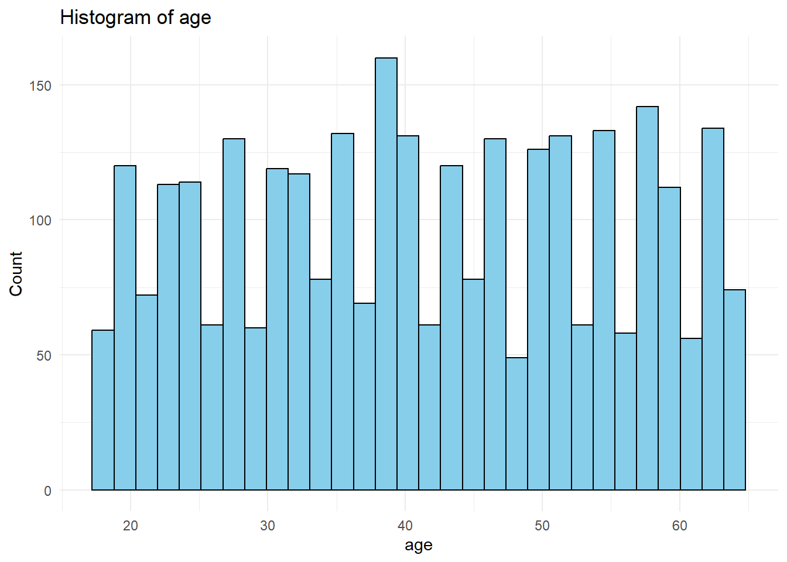
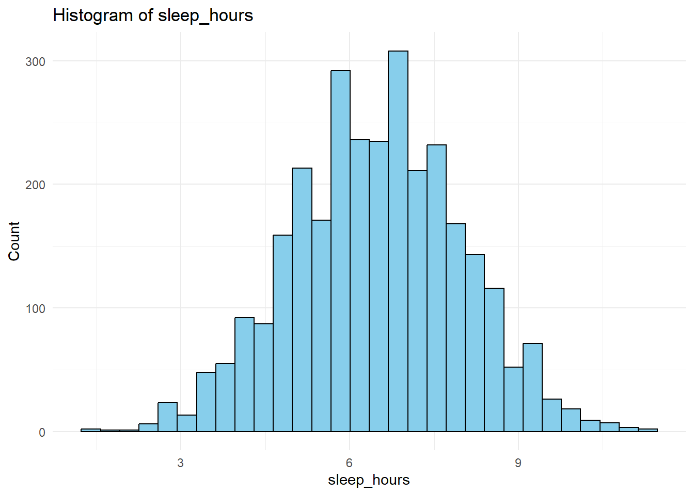
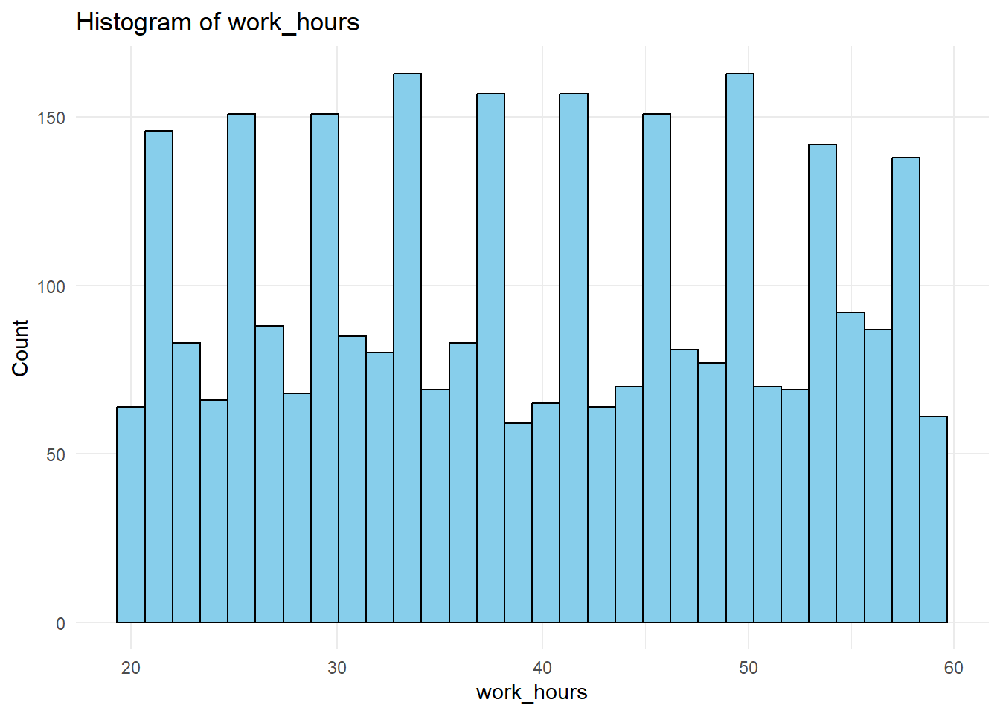
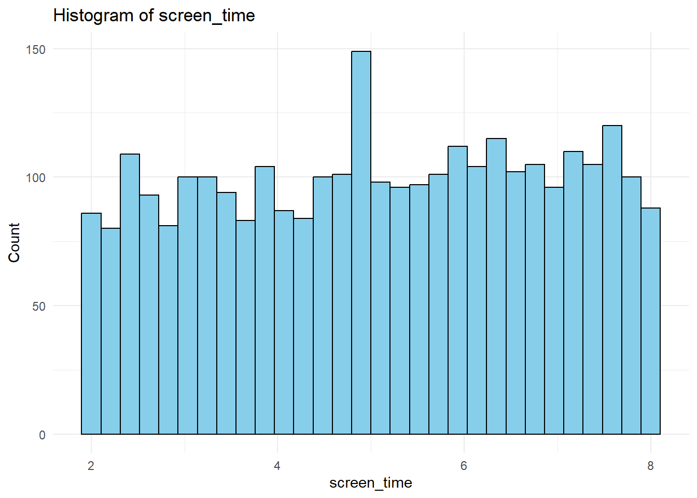
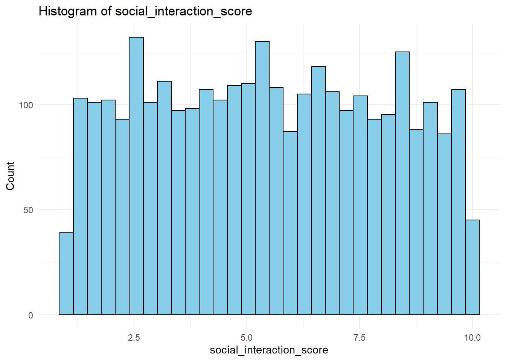
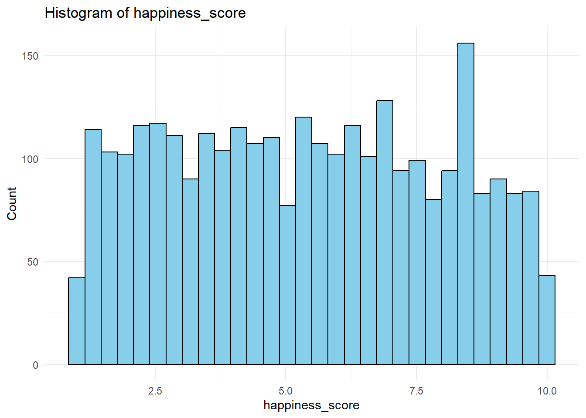
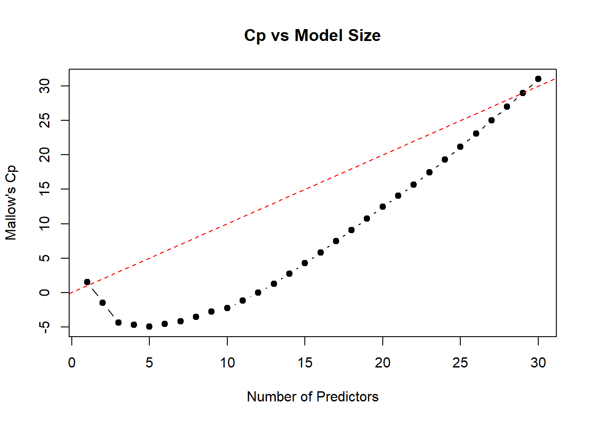
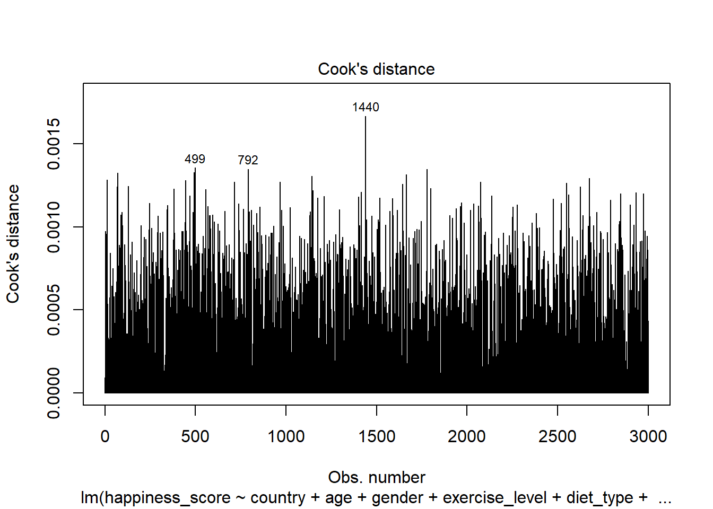
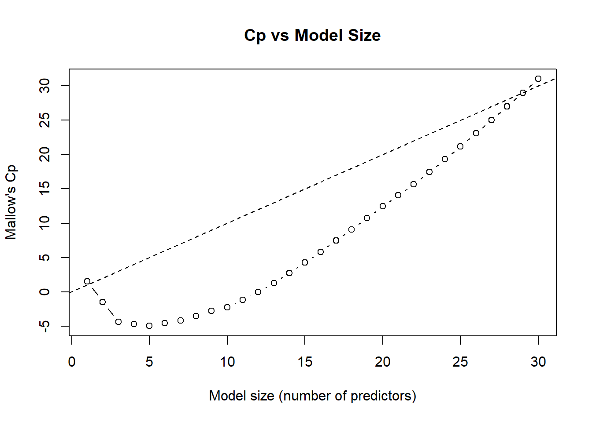
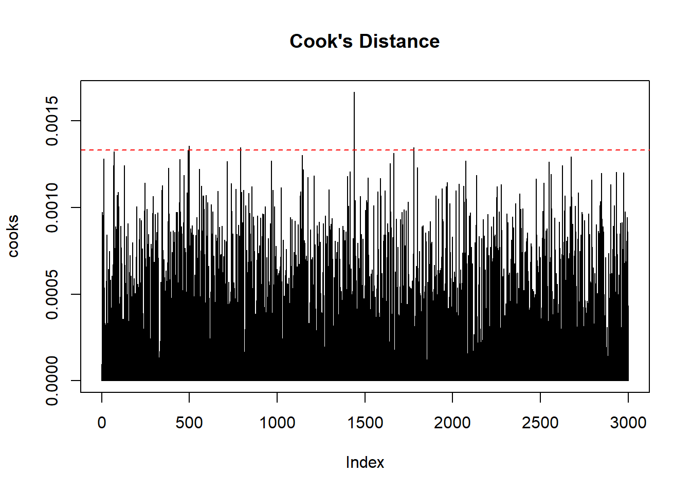

library(dplyr)
Attaching package: 'dplyr'The following objects are masked from 'package:stats':
filter, lagThe following objects are masked from 'package:base':
intersect, setdiff, setequal, unionlibrary(ggplot2)Warning: package 'ggplot2' was built under R version 4.5.2library(tidyr)
library(kableExtra)
Attaching package: 'kableExtra'The following object is masked from 'package:dplyr':
group_rowslibrary(lmtest)Loading required package: zoo
Attaching package: 'zoo'The following objects are masked from 'package:base':
as.Date, as.Date.numericlibrary(psych)Warning: package 'psych' was built under R version 4.5.2
Attaching package: 'psych'The following objects are masked from 'package:ggplot2':
%+%, alphalibrary(leaps)
library(car)Warning: package 'car' was built under R version 4.5.2Loading required package: carDataWarning: package 'carData' was built under R version 4.5.2
Attaching package: 'car'The following object is masked from 'package:psych':
logitThe following object is masked from 'package:dplyr':
recode# 1. Load Data
df <- read.csv("Data/Mental_Health_Lifestyle_Dataset.csv")
glimpse(df)Rows: 3,000
Columns: 12
$ country <chr> "Brazil", "Australia", "Japan", "Brazil", "Ge…
$ age <int> 48, 31, 37, 35, 46, 23, 49, 46, 60, 19, 40, 3…
$ gender <chr> "Male", "Male", "Female", "Male", "Male", "Ot…
$ exercise_level <chr> "Low", "Moderate", "Low", "Low", "Low", "Mode…
$ diet_type <chr> "Vegetarian", "Vegan", "Vegetarian", "Vegan",…
$ sleep_hours <dbl> 6.3, 4.9, 7.2, 7.2, 7.3, 2.7, 6.6, 6.3, 4.7, …
$ stress_level <chr> "Low", "Low", "High", "Low", "Low", "Moderate…
$ mental_health_condition <chr> "None", "PTSD", "None", "Depression", "Anxiet…
$ work_hours <int> 21, 48, 43, 43, 35, 50, 28, 46, 33, 44, 41, 5…
$ screen_time <dbl> 4.0, 5.2, 4.7, 2.2, 3.6, 3.3, 7.2, 5.6, 6.6, …
$ social_interaction_score <dbl> 7.8, 8.2, 9.6, 8.2, 4.7, 8.4, 5.6, 3.5, 3.7, …
$ happiness_score <dbl> 6.5, 6.8, 9.7, 6.6, 4.4, 7.2, 6.9, 1.1, 5.2, …# 2. Missingness Check
missing_tbl <- df %>%
summarise(across(everything(), ~mean(is.na(.)) * 100)) %>%
pivot_longer(everything(), names_to = "variable", values_to = "pct_missing")
missing_tbl %>%
mutate(pct_missing = round(pct_missing, 2)) %>%
kbl(caption = "Percent Missing by Variable") %>%
kable_paper(full_width = FALSE)| variable | pct_missing |
|---|---|
| country | 0 |
| age | 0 |
| gender | 0 |
| exercise_level | 0 |
| diet_type | 0 |
| sleep_hours | 0 |
| stress_level | 0 |
| mental_health_condition | 0 |
| work_hours | 0 |
| screen_time | 0 |
| social_interaction_score | 0 |
| happiness_score | 0 |
# 3. Convert Categoricals to Factors + Baselines
df <- df %>%
mutate(
country = factor(country),
gender = factor(gender),
exercise_level = relevel(factor(exercise_level), ref = "Low"),
diet_type = factor(diet_type),
stress_level = relevel(factor(stress_level), ref = "Low"),
mental_health_condition = relevel(factor(mental_health_condition), ref = "None")
)
# Keep needed variables
vars_needed <- c(
"happiness_score", "country", "age", "gender", "exercise_level",
"diet_type", "sleep_hours", "stress_level", "mental_health_condition",
"work_hours", "screen_time", "social_interaction_score"
)
happiness <- df %>%
select(all_of(vars_needed)) %>%
drop_na()
summary_table <- psych::describe(df)
summary_table vars n mean sd median trimmed mad min max
country* 1 3000 4.03 2.02 4.0 4.04 2.97 1.0 7.0
age 2 3000 41.23 13.43 41.0 41.25 16.31 18.0 64.0
gender* 3 3000 1.99 0.82 2.0 1.99 1.48 1.0 3.0
exercise_level* 4 3000 1.99 0.82 2.0 1.99 1.48 1.0 3.0
diet_type* 5 3000 2.96 1.42 3.0 2.95 1.48 1.0 5.0
sleep_hours 6 3000 6.48 1.50 6.5 6.48 1.48 1.4 11.3
stress_level* 7 3000 1.99 0.82 2.0 1.99 1.48 1.0 3.0
mental_health_condition* 8 3000 3.00 1.42 3.0 3.00 1.48 1.0 5.0
work_hours 9 3000 39.47 11.45 39.0 39.47 14.83 20.0 59.0
screen_time 10 3000 5.09 1.75 5.1 5.11 2.22 2.0 8.0
social_interaction_score 11 3000 5.47 2.56 5.5 5.46 3.26 1.0 10.0
happiness_score 12 3000 5.40 2.56 5.4 5.38 3.26 1.0 10.0
range skew kurtosis se
country* 6.0 -0.02 -1.27 0.04
age 46.0 -0.01 -1.16 0.25
gender* 2.0 0.02 -1.52 0.01
exercise_level* 2.0 0.02 -1.52 0.02
diet_type* 4.0 0.05 -1.32 0.03
sleep_hours 9.9 -0.02 -0.08 0.03
stress_level* 2.0 0.01 -1.50 0.01
mental_health_condition* 4.0 0.01 -1.32 0.03
work_hours 39.0 0.01 -1.21 0.21
screen_time 6.0 -0.07 -1.20 0.03
social_interaction_score 9.0 0.02 -1.16 0.05
happiness_score 9.0 0.03 -1.17 0.05# 4. Exploratory Plots (Histograms)
numeric_vars <- c(
"age", "sleep_hours", "work_hours",
"screen_time", "social_interaction_score", "happiness_score"
)
for (v in numeric_vars) {
print(
ggplot(happiness, aes_string(x = v)) +
geom_histogram(fill = "skyblue", color = "black", bins = 30) +
labs(title = paste("Histogram of", v), x = v, y = "Count") +
theme_minimal()
)
}Warning: `aes_string()` was deprecated in ggplot2 3.0.0.
ℹ Please use tidy evaluation idioms with `aes()`.
ℹ See also `vignette("ggplot2-in-packages")` for more information.





# 5. Full Model With Interactions (before selection)
full_mod <- lm(
happiness_score ~ country + age + gender + exercise_level + diet_type +
sleep_hours + stress_level + mental_health_condition + work_hours +
screen_time + social_interaction_score +
exercise_level:stress_level + age:screen_time,
data = happiness
)
summary(full_mod)
Call:
lm(formula = happiness_score ~ country + age + gender + exercise_level +
diet_type + sleep_hours + stress_level + mental_health_condition +
work_hours + screen_time + social_interaction_score + exercise_level:stress_level +
age:screen_time, data = happiness)
Residuals:
Min 1Q Median 3Q Max
-5.0184 -2.1990 0.0124 2.1153 5.0204
Coefficients:
Estimate Std. Error t value
(Intercept) 5.656894 0.578380 9.781
countryBrazil -0.159106 0.175903 -0.905
countryCanada 0.067276 0.174693 0.385
countryGermany -0.133573 0.177196 -0.754
countryIndia -0.113995 0.174311 -0.654
countryJapan -0.212173 0.173507 -1.223
countryUSA -0.156549 0.172882 -0.906
age -0.014052 0.010831 -1.297
genderMale 0.194050 0.114566 1.694
genderOther 0.140192 0.114058 1.229
exercise_levelHigh 0.125624 0.199966 0.628
exercise_levelModerate 0.011771 0.193078 0.061
diet_typeJunk Food 0.170578 0.144521 1.180
diet_typeKeto 0.078730 0.148259 0.531
diet_typeVegan 0.006719 0.148367 0.045
diet_typeVegetarian 0.397911 0.146957 2.708
sleep_hours 0.027393 0.031248 0.877
stress_levelHigh -0.070635 0.196459 -0.360
stress_levelModerate -0.176251 0.192749 -0.914
mental_health_conditionAnxiety -0.199863 0.146522 -1.364
mental_health_conditionBipolar 0.040739 0.150234 0.271
mental_health_conditionDepression -0.106228 0.149614 -0.710
mental_health_conditionPTSD 0.005462 0.146879 0.037
work_hours 0.002976 0.004094 0.727
screen_time -0.055513 0.086480 -0.642
social_interaction_score -0.043387 0.018255 -2.377
exercise_levelHigh:stress_levelHigh 0.224131 0.281734 0.796
exercise_levelModerate:stress_levelHigh 0.051067 0.278077 0.184
exercise_levelHigh:stress_levelModerate 0.178306 0.280842 0.635
exercise_levelModerate:stress_levelModerate 0.132744 0.277651 0.478
age:screen_time 0.002046 0.002010 1.017
Pr(>|t|)
(Intercept) < 2e-16 ***
countryBrazil 0.36580
countryCanada 0.70018
countryGermany 0.45102
countryIndia 0.51318
countryJapan 0.22148
countryUSA 0.36526
age 0.19458
genderMale 0.09041 .
genderOther 0.21912
exercise_levelHigh 0.52990
exercise_levelModerate 0.95139
diet_typeJunk Food 0.23798
diet_typeKeto 0.59544
diet_typeVegan 0.96388
diet_typeVegetarian 0.00681 **
sleep_hours 0.38076
stress_levelHigh 0.71922
stress_levelModerate 0.36058
mental_health_conditionAnxiety 0.17266
mental_health_conditionBipolar 0.78628
mental_health_conditionDepression 0.47775
mental_health_conditionPTSD 0.97034
work_hours 0.46736
screen_time 0.52098
social_interaction_score 0.01753 *
exercise_levelHigh:stress_levelHigh 0.42636
exercise_levelModerate:stress_levelHigh 0.85431
exercise_levelHigh:stress_levelModerate 0.52555
exercise_levelModerate:stress_levelModerate 0.63262
age:screen_time 0.30900
---
Signif. codes: 0 '***' 0.001 '**' 0.01 '*' 0.05 '.' 0.1 ' ' 1
Residual standard error: 2.555 on 2969 degrees of freedom
Multiple R-squared: 0.01222, Adjusted R-squared: 0.002236
F-statistic: 1.224 on 30 and 2969 DF, p-value: 0.187# 6. Mallow’s Cp Variable Selection (exhaustive)
# Model matrix (dummy variables)
X <- model.matrix(full_mod) # includes intercept in first column
y <- happiness$happiness_score
# Use all predictors except intercept for regsubsets
subset_fit <- regsubsets(x = X[, -1], y = y,
nvmax = ncol(X) - 1,
method = "exhaustive")
subset_summary <- summary(subset_fit)
cp_vals <- subset_summary$cp
sizes <- 1:length(cp_vals)
# Look at Cp vs model size
cp_table <- data.frame(
size = sizes,
Cp = cp_vals
)
print(head(cp_table, 10)) size Cp
1 1 1.516945
2 2 -1.467642
3 3 -4.382899
4 4 -4.696751
5 5 -4.948015
6 6 -4.582914
7 7 -4.141997
8 8 -3.509033
9 9 -2.734746
10 10 -2.229498# Choose model where Cp is closest to its size
best_size <- which.min(abs(cp_vals - sizes))
best_size[1] 29# Coefficients of Cp-selected model
selected_vars <- coef(subset_fit, best_size)
selected_vars (Intercept)
5.659203375
countryBrazil
-0.159158099
countryCanada
0.067432251
countryGermany
-0.133603668
countryIndia
-0.113865761
countryJapan
-0.212039531
countryUSA
-0.156583583
age
-0.014044549
genderMale
0.194003028
genderOther
0.140109820
exercise_levelHigh
0.125689307
exercise_levelModerate
0.011777569
diet_typeJunk Food
0.170498973
diet_typeKeto
0.078629080
diet_typeVegan
0.006701219
diet_typeVegetarian
0.397922200
sleep_hours
0.027391319
stress_levelHigh
-0.070807631
stress_levelModerate
-0.176218521
mental_health_conditionAnxiety
-0.202655490
mental_health_conditionBipolar
0.037942347
mental_health_conditionDepression
-0.109026495
work_hours
0.002980910
screen_time
-0.055470937
social_interaction_score
-0.043382175
exercise_levelHigh:stress_levelHigh
0.224222256
exercise_levelModerate:stress_levelHigh
0.051301400
exercise_levelHigh:stress_levelModerate
0.178174369
exercise_levelModerate:stress_levelModerate
0.132623820
age:screen_time
0.002044670 plot(sizes, cp_vals, type = "b", pch = 19,
xlab = "Number of Predictors",
ylab = "Mallow's Cp",
main = "Cp vs Model Size")
abline(0, 1, col = "red", lty = 2) # Cp = p reference line
# Interpret that Cp does not clearly favor a much smaller
# model, so will continue using `full_mod` as the final model.
final_mod <- full_mod # final model = full model
summary(final_mod)
Call:
lm(formula = happiness_score ~ country + age + gender + exercise_level +
diet_type + sleep_hours + stress_level + mental_health_condition +
work_hours + screen_time + social_interaction_score + exercise_level:stress_level +
age:screen_time, data = happiness)
Residuals:
Min 1Q Median 3Q Max
-5.0184 -2.1990 0.0124 2.1153 5.0204
Coefficients:
Estimate Std. Error t value
(Intercept) 5.656894 0.578380 9.781
countryBrazil -0.159106 0.175903 -0.905
countryCanada 0.067276 0.174693 0.385
countryGermany -0.133573 0.177196 -0.754
countryIndia -0.113995 0.174311 -0.654
countryJapan -0.212173 0.173507 -1.223
countryUSA -0.156549 0.172882 -0.906
age -0.014052 0.010831 -1.297
genderMale 0.194050 0.114566 1.694
genderOther 0.140192 0.114058 1.229
exercise_levelHigh 0.125624 0.199966 0.628
exercise_levelModerate 0.011771 0.193078 0.061
diet_typeJunk Food 0.170578 0.144521 1.180
diet_typeKeto 0.078730 0.148259 0.531
diet_typeVegan 0.006719 0.148367 0.045
diet_typeVegetarian 0.397911 0.146957 2.708
sleep_hours 0.027393 0.031248 0.877
stress_levelHigh -0.070635 0.196459 -0.360
stress_levelModerate -0.176251 0.192749 -0.914
mental_health_conditionAnxiety -0.199863 0.146522 -1.364
mental_health_conditionBipolar 0.040739 0.150234 0.271
mental_health_conditionDepression -0.106228 0.149614 -0.710
mental_health_conditionPTSD 0.005462 0.146879 0.037
work_hours 0.002976 0.004094 0.727
screen_time -0.055513 0.086480 -0.642
social_interaction_score -0.043387 0.018255 -2.377
exercise_levelHigh:stress_levelHigh 0.224131 0.281734 0.796
exercise_levelModerate:stress_levelHigh 0.051067 0.278077 0.184
exercise_levelHigh:stress_levelModerate 0.178306 0.280842 0.635
exercise_levelModerate:stress_levelModerate 0.132744 0.277651 0.478
age:screen_time 0.002046 0.002010 1.017
Pr(>|t|)
(Intercept) < 2e-16 ***
countryBrazil 0.36580
countryCanada 0.70018
countryGermany 0.45102
countryIndia 0.51318
countryJapan 0.22148
countryUSA 0.36526
age 0.19458
genderMale 0.09041 .
genderOther 0.21912
exercise_levelHigh 0.52990
exercise_levelModerate 0.95139
diet_typeJunk Food 0.23798
diet_typeKeto 0.59544
diet_typeVegan 0.96388
diet_typeVegetarian 0.00681 **
sleep_hours 0.38076
stress_levelHigh 0.71922
stress_levelModerate 0.36058
mental_health_conditionAnxiety 0.17266
mental_health_conditionBipolar 0.78628
mental_health_conditionDepression 0.47775
mental_health_conditionPTSD 0.97034
work_hours 0.46736
screen_time 0.52098
social_interaction_score 0.01753 *
exercise_levelHigh:stress_levelHigh 0.42636
exercise_levelModerate:stress_levelHigh 0.85431
exercise_levelHigh:stress_levelModerate 0.52555
exercise_levelModerate:stress_levelModerate 0.63262
age:screen_time 0.30900
---
Signif. codes: 0 '***' 0.001 '**' 0.01 '*' 0.05 '.' 0.1 ' ' 1
Residual standard error: 2.555 on 2969 degrees of freedom
Multiple R-squared: 0.01222, Adjusted R-squared: 0.002236
F-statistic: 1.224 on 30 and 2969 DF, p-value: 0.187# 7. Diagnostics
# Linearity & residual structure
plot(final_mod, 1) # Residuals vs Fitted
# Homoscedasticity (Breusch-Pagan)
bptest(final_mod)
studentized Breusch-Pagan test
data: final_mod
BP = 29.246, df = 30, p-value = 0.5047# Normality (Q–Q plot + KS test)
plot(final_mod, 2)
ks.test(rstandard(final_mod), "pnorm")
Asymptotic one-sample Kolmogorov-Smirnov test
data: rstandard(final_mod)
D = 0.057252, p-value = 5.754e-09
alternative hypothesis: two-sided# Multicollinearity
vif(final_mod)there are higher-order terms (interactions) in this model
consider setting type = 'predictor'; see ?vif GVIF Df GVIF^(1/(2*Df))
country 1.042389 6 1.003466
age 9.719470 1 3.117606
gender 1.012540 2 1.003120
exercise_level 9.017080 2 1.732872
diet_type 1.028246 4 1.003488
sleep_hours 1.009326 1 1.004652
stress_level 8.570685 2 1.711015
mental_health_condition 1.029475 4 1.003638
work_hours 1.010195 1 1.005084
screen_time 10.491074 1 3.238993
social_interaction_score 1.006279 1 1.003135
exercise_level:stress_level 44.659931 4 1.607829
age:screen_time 19.118552 1 4.372477# Influential points
plot(final_mod, 4)
cooks <- cooks.distance(final_mod)
plot(cooks, type="h", main="Cook's Distance")
abline(h = 4/length(cooks), col="red", lty=2)